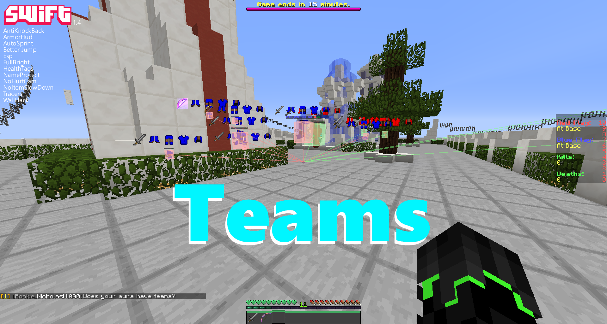

What's New?
Latest Updates and More!
Swift 1.5 - Better Gui!
Changelog for 1.4.1
-
The gui has been redesigned!
-
Gui now has hover descriptions to tell you which mods do what.
-
Some mods in the gui now have a little red line indicating they have more settings if you click them.
-
The main menu has been redesigned.
-
The main menu has had some bug fixes
-
Main menu has a changelog button.
-
Main menu has a youtube button.
-
Aura now recognize teams!
-
Aura now recognizes teams!
-
Tracers now recognizes teams!
-
Esp now recognizes teams!
-
Esp and tracers have 2 different modes teams (under extra features) and normal (untick teams)!
-
If you right click on a mod in the gui you can change the keybind or view the keybind already set!
-
Added some new buttons to the main menu screen!
-
You can now hover above mods to view their description!
-
Added a new category called chat!
-
Fixed the criticals mod from kicking you for flying!
-
Added a new mod called Blink!
-
Added a new mod called GoodGame (sends a gg in chat)!
-
Added a new mod called Legit (sends a .legit in chat)!
-
Added BetterJump!
-
Bunnyhop (NCPHop) now works on most ncp servers!
-
Fixed AirMove to stop you from flying!
-
Added some more bunnyhop modes(NCP, Normal, Low, Fast)!